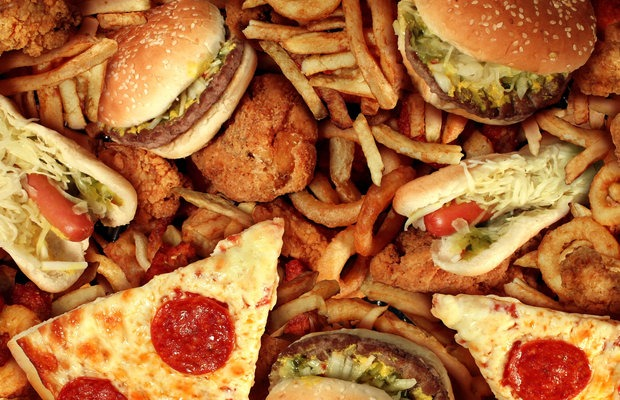

7 Foods That Are Bad For Your Health (Avoid Them!)
There is a lot of confusion out there about which foods are healthy, and which are not Here is a list of 7 foods that are generally very unhealthy.
If you want to lose weight and avoid chronic disease, then you shouldn't eat much of these foods.
In many cases, the best choice is to avoid them completely.
In this article, healthy alternatives are mentioned whenever possible.
1.Sugary Drinks
Added sugar is the single worst ingredient in the modern diet.
However, some sources of sugar are worse than others, and sugary drinks are the absolute worst.
When people drink sugar calories, the brain doesn't "register" them as food.
For this reason, people don't automatically compensate by eating less of other foods instead, and end up drastically increasing their total calorie intake (1, 2, 3).
Sugar, when consumed in large amounts, can drive insulin resistance in the body and is strongly linked to non-alcoholic fatty liver disease. It is also associated with various serious diseases, including type 2 diabetes and heart disease (4, 5, 6).
Sugary drinks are also THE most fattening aspect of the modern diet, and drinking them in large amounts can drive fat gain and obesity (7, 8, 9).
Alternatives: Drink water, soda water, coffee or tea instead. Adding a slice of lemon to water or soda water can add some taste if you don't like it plain
2.Most Pizzas
Pizza is one of the world's most popular junk foods.
This is not surprising, given that it tastes awesome and is incredibly convenient to eat.
The problem is that most commercially prepared pizzas are made with seriously unhealthy ingredients.
The dough is made from highly refined wheat flour, and the meats on them are usually processed. Pizza is also extremely high in calories.
Alternatives: Some pizza places use healthier ingredients. Homemade pizzas can also be very healthy, as long as you choose wholesome ingredients.
3.White Bread
Bread is generally made from wheat, which contains the protein gluten.
For this reason, all wheat-based breads are a bad idea for people who have celiac disease or gluten sensitivity.
However, most commercial breads are unhealthy, even for people who do tolerate gluten.
This is because the great majority of them are made from refined wheat, which is low in essential nutrients (empty calories) and leads to rapid spikes in blood sugar (10).
Alternatives: For people who can tolerate gluten, ezekiel bread is an excellent choice. Whole grain bread is also definitely better (or "less bad") than white bread.
4.Most Fruit Juices
Fruit juice is often assumed to be healthy, but this is a mistake.
Many fruit juices are actually little more than fruit-flavored sugar water.
It is true that the juice contains some antioxidants and vitamin C, but this must be weighed against the large amount of liquid sugar.
In fact, fruit juice contains just as much sugar as a sugary drink like Coke or Pepsi, and sometimes even more (11).
Alternatives: There are some fruit juices that have been shown to have health benefits despite the sugar content, such as pomegranate juice and blueberry juice.
5.Industrial Vegetable Oils
In the last 100 years or so, people have increased their consumption of added fats.
However, this is entirely explained by a drastic increase in the consumption of refined vegetable oils, such as soybean oil, corn oil, cottonseed oil and canola oil.
These oils are very high in omega-6 fatty acids, which humans never consumed in such large amounts before.
There are many serious concerns with these oils. They are highly sensitive to oxidation and cause increased oxidative stress in the body. They have also been linked to increased risk of cancer (12, 13, 14, 15, 16, 17, 18, 19).
Alternatives: Use healthier fats like coconut oil, butter, extra virgin olive oil or avocado oil instead.
6.Margarine
Margarine used to be considered a healthy alternative to butter.
Fortunately, most people have now realized that this is far from being true.
Margarine is a highly processed pseudo-food that has been engineered to look and taste like butter.
It is loaded with artificial ingredients, and is usually made with industrial vegetable oils that have been hydrogenated to make them more solid. This increases their trans fat content significantly.
Keep in mind that manufacturers are allowed to label their products with "no trans fat" as long as it contains less than 0.5 grams per serving, which is still a significant amount.
Alternatives: Use real butter instead, preferably from grass-fed cows.
7.Pastries, Cookies and Cakes
Most pastries, cookies and cakes are extremely unhealthy.
They are generally made with refined sugar, refined wheat flour and added fats, which are often disturbingly unhealthy fats like shortening (high in trans fats).
These tasty treats are literally some of the worst things that you can put into your body.
Almost no essential nutrients, but tons of calories and unhealthy ingredients.